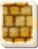
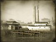

Requires
- Arts: 
Enables
- Buildings: 
Effects
- -10% to the upkeep costs of fleets
Description
Mighty dragon's scales,
Stronger than ancient stones:
His greatest weapon.
It may not seem like much, but a hand's width of iron from a new-fangled factory helps separate victory from defeat. One shot that does not penetrate may be enough, if the fiery reply then brings death to the assailant. But iron security will not guarantee victory: it lets brave men show their bravery and do their duties, no more than that.